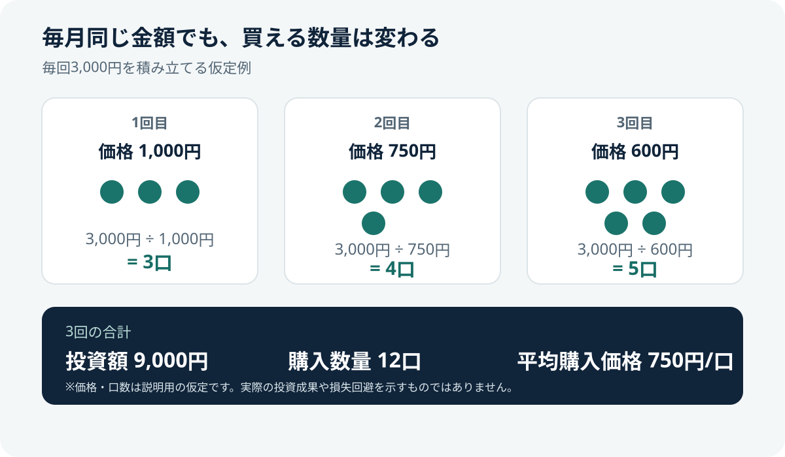

積立投資とは？仕組み・メリットと注意点を初心者向けに解説
積立投資は、決めた金額や数量を定期的に買い付けていく投資方法です。一度にまとめて購入する方法と比べて購入タイミングを分けられますが、利益や元本が保証されるわけではありません。
- 積立投資は購入時期を分け、定期的に投資する方法。
- 定額購入では価格が低いときに多く、高いときに少なく買える場合がある。
- 価格が下がり続ければ損失が出るため、積立だけでリスクがなくなるわけではない。
- 生活資金を確保し、目的・期間・リスク許容度に合う積立額を設定する。
1. 積立投資とは？
積立投資は、毎月などの決まった頻度で金融商品を買い付ける方法です。投資信託の自動積立や、株式を定期的に購入する方法などがあります。買付頻度、金額、対象商品、注文日などは金融機関や商品によって異なります。
積立投資は購入方法の一つで、投資対象そのもののリスクをなくすものではありません。株式に投資する商品なら株価変動、海外資産なら為替変動などの影響を受けます。
2. 定額積立では購入数量が変わる
毎回同じ金額を投資する「定額積立」では、価格が低いときに多く、高いときに少ない数量を購入します。この方法はドル・コスト平均法と呼ばれることがあります。
| 買付回 | 1口あたり価格（仮定） | 買付額 | 購入数量 |
|---|---|---|---|
| 1回目 | 1,000円 | 3,000円 | 3口 |
| 2回目 | 750円 | 3,000円 | 4口 |
| 3回目 | 600円 | 3,000円 | 5口 |
| 合計 | — | 9,000円 | 12口 |

この仮定例では平均購入価格は1口750円です。ただし、積立が一括投資より常に有利になるわけではありません。価格が上昇し続ける局面では、早い時期に一括購入した方が結果的に有利になる場合もあります。実際には価格変動や手数料などの影響があります。
3. 積立投資のメリット
- 購入時期を分けられる：一度に購入する場合と比べ、複数のタイミングに分けて投資できます。
- 習慣化しやすい：自動積立なら設定条件に従って買い付けられます。
- 少額から始められる場合がある：最低買付金額は金融機関や商品ごとに異なります。
- 家計計画に組み込みやすい：毎月の収支に合わせて積立額を決め、定期的に見直せます。
4. 注意点・リスク
- 元本割れ：売却時の価格が購入額を下回ることがあります。
- 投資対象のリスク：株価、金利、為替、信用、流動性などの影響を受けます。
- 費用：投資信託では信託報酬などのコストがかかる場合があります。少額でも確認しましょう。
- 下落時にも買付が続く：不安で継続できなくなる可能性もあるため、無理な金額を設定しないことが大切です。
- 短期の目標には不向きな場合：近い将来に使うお金は、値下がりした時期に取り崩すリスクがあります。
5. 積立額と投資期間の決め方
- 生活費や急な支出に備える資金を確保する。
- 何のために、いつ使う資金なのかを整理する。
- 値下がりした場合、どの程度の損失まで受け入れられるか考える。
- 投資対象、分散、手数料、換金条件を確認する。
- 収入・支出やライフイベントに合わせて定期的に見直す。
積立額を増やすこと自体が目的ではありません。無理な金額を設定して途中で売却するより、目的と家計に合った計画を立てることが重要です。
6. NISAで積立投資をする場合
NISAは一定の条件のもとで対象商品の売却益や配当等が非課税になる制度です。つみたて投資枠では購入できる商品に条件があります。NISA口座を使っても元本や運用成果が保証されるわけではなく、信託報酬などの費用もかかります。制度の詳細や対象商品は最新の公式情報で確認してください。
始める前のチェックリスト
- 生活費や近い将来に使う資金を確保した
- 投資の目的と使う時期を決めた
- 値下がりと損失の可能性を理解した
- 投資対象、費用、換金条件を確認した
- 無理なく続けられる積立額にした
- 積立は利益や元本を保証しないと理解した
公式情報・参考資料
- 金融庁：NISA特設ウェブサイト — 制度の仕組みと対象商品
- J-FLEC（金融経済教育推進機構） — 家計管理や資産形成に関する教育情報
- 投資信託協会 — 投資信託の仕組みやリスク、費用
まとめ
積立投資は購入時期を分けて定期的に投資を続ける方法です。定額積立では価格に応じて購入数量が変わりますが、元本割れを防いだり必ず利益を生んだりするわけではありません。生活資金、目的、期間、リスク、費用を確認し、無理のない計画を立てましょう。
関連記事：投資を始める前に確認したい7つのこと · NISAで投資信託を選ぶチェックポイント · 信託報酬とコストの見方